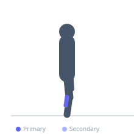

Exercise guide / Standing Calf Raise
Standing Calf Raise
The standing calf raise is a plantarflexion exercise performed with extended knees, emphasizing the gastrocnemius. It is typically performed on a calf raise machine or on the edge of a step, and is the primary exercise for developing calf size and plantar flexion strength.
Primary muscles
gastrocnemius medial
gastrocnemius lateral
Secondary muscles
soleus
Equipment
Standing Calf Raise Machine
Optional
No Equipment (Bodyweight)


Starting position
- Stand on the calf raise platform with the balls of the feet on the edge and heels hanging off. Shoulders under the pads. Knees straight but not locked.
Setup
- Adjust pad height so there is slight pressure on the shoulders. Keep knees nearly fully extended throughout.
Steps
- Lower the heels as far as possible below the platform for a maximum calf stretch.
- Press up onto the toes as high as possible, fully contracting the calves.
- Hold the peak position for one second, then lower under control.
Coaching cues
- Full stretch at the bottom — let the heels drop all the way
- Drive up onto the big toe side of the foot at the top
Breathing
- Exhale on the raise, inhale on the descent.
Range of motion
- Full plantar flexion at the top, full dorsiflexion stretch at the bottom.
Tempo
- 3-1-3-0
Common mistakes
- Bouncing at the bottom, missing the eccentric stretch benefit
- Using a partial range of motion — go as far down and up as possible
- Bending the knees, which shifts emphasis to the soleus
Safety
- Achilles tendon tightness is common — warm up well before heavy sets
Training
- hypertrophy: 10–15 reps
- endurance: 20–30 reps
- hypertrophy: 3–5 sets
- endurance: 2–4 sets
- Rest: {'hypertrophy': 75, 'endurance': 30}